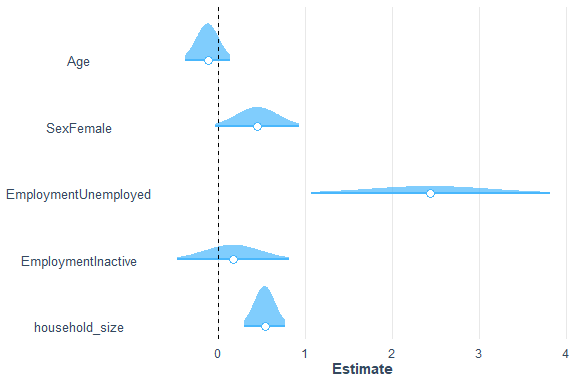
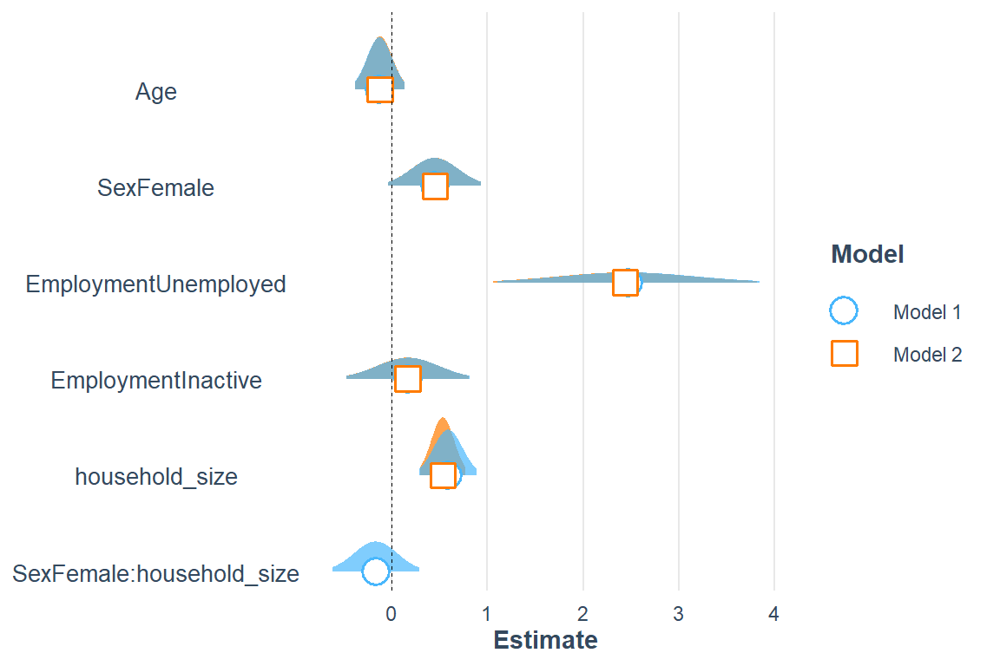
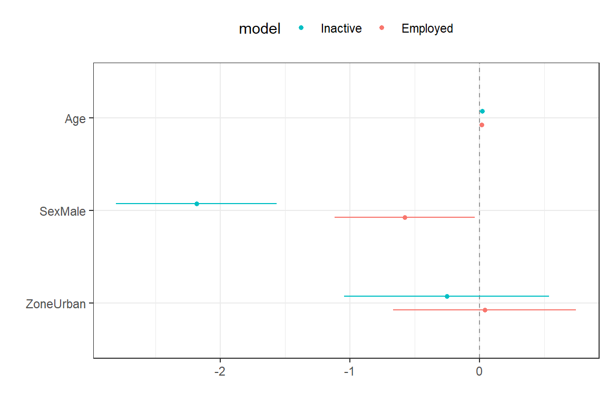

options(digits = 4)
library(tidyverse)
library(survey)
library(srvyr)
library(broom)
library(jtools)
survey_data <- readRDS("../data/sample.rds") %>%
add_count(HHID, name = "household_size") %>%
mutate(
Stratum = factor(Stratum),
poor = factor(
Poverty != "NotPoor",
levels = c(FALSE, TRUE),
labels = c("Not poor", "Poor")
)
)
survey_design <- survey_data %>%
as_survey_design(
strata = Stratum,
ids = PSU,
weights = wk,
nest = TRUE
)6 Modelos lineales generalizados
Nelder y Wedderburn (1972) introdujeron los modelos lineales generalizados como un marco capaz de integrar diversos métodos estadísticos ampliamente utilizados, como la regresión logística, los modelos log-lineales para datos de conteo y otros modelos avanzados de regresión para variables continuas. Posteriormente, McCullagh y Nelder (1989) sistematizaron esta formulación, que permitió extender las herramientas de regresión más allá de los escenarios en los que la variable respuesta sigue una distribución normal. Cuando la variable de interés no es continua o los supuestos del modelo lineal clásico no se satisfacen, los modelos lineales generalizados constituyen una alternativa adecuada para modelar las relaciones de interés.
La necesidad de esta generalización surge porque los modelos lineales clásicos asumen, entre otras cosas, normalidad y homogeneidad de varianza en los errores, condiciones que no se cumplen cuando se analizan variables categóricas, proporciones o conteos. En este tipo de situaciones, los modelos lineales generalizados ofrecen un marco flexible para modelar adecuadamente la relación entre las variables mediante la selección de una distribución de probabilidad apropiada para la respuesta y una función de enlace que conecte la media de dicha distribución con el predictor lineal.
Para ilustrar los modelos de este capítulo se utiliza la muestra almacenada en sample.rds. El siguiente bloque carga las librerías, define la condición de pobreza (poor), calcula el tamaño del hogar (household_size) contando los integrantes de cada HHID y construye el diseño muestral. A partir de este diseño se seleccionan las unidades de análisis correspondientes a cada ejemplo.
6.1 Modelo de regresión logística
De acuerdo con McCullagh y Nelder (1989) y Agresti (2019), cuando la variable de interés es dicotómica, tomando valores de cero o uno, el modelo lineal clásico no resulta adecuado debido a que puede generar predicciones fuera del intervalo \((0,1)\). Para abordar estas limitaciones, el modelo de regresión logística constituye uno de los modelos más utilizados para analizar variables binarias. Además, en el contexto de encuestas de hogares, la regresión logística puede emplearse para analizar la asociación entre una condición de interés, como la pobreza, y características sociodemográficas de los individuos o los hogares.
Considere, una variable dicotómica \(Y_k \in \{0,1\}\), cuya esperanza es \(\theta_k=Pr(Y_k=1)\). El modelo de regresión logística relaciona dicha probabilidad con un conjunto de variables explicativas mediante la función de enlace logit, definida como
\[ \log\left(\frac{\theta_k}{1-\theta_k}\right) = \beta_0+\beta_1x_{k1}+\cdots+\beta_px_{kp} =\mathbf{x}_{k}\boldsymbol{\beta} \tag{6.1}\]
En donde \(\boldsymbol{\beta}\) es el vector de coeficientes de regresión asociado a las covariables. Esta transformación logit convierte el intervalo restringido de probabilidades \((0,1)\) en toda la recta real, permitiendo modelar la relación entre la respuesta y las variables auxiliares mediante un predictor lineal. De manera equivalente, la probabilidad de éxito puede expresarse mediante la siguiente relación:
\[ \theta_k = Pr(Y_k = 1 \mid \mathbf{x}_k) = \frac{\exp(\mathbf{x}_k\boldsymbol{\beta})} {1+\exp(\mathbf{x}_k\boldsymbol{\beta})} \tag{6.2}\]
De manera equivalente, la probabilidad de que la unidad no presente la característica de interés es \(Pr(Y_k = 0 \mid \mathbf{x}_k) = 1-\theta_k\). Bajo esta parametrización, cada coeficiente de \(\boldsymbol{\beta}\) representa el efecto de una covariable sobre el logaritmo de la razón de probabilidades de que ocurra el evento de interés, manteniendo constantes las demás variables del modelo. Según Heeringa et al. (2017), la estimación de los parámetros puede realizarse mediante el enfoque de pseudo-máxima verosimilitud. Este método, abordado con detalle en el segundo anexo, incorpora los factores de expansión en la función de verosimilitud convencional con el fin de obtener estimadores consistentes respecto de la población objetivo. En este sentido, para este modelo, la función de pseudo-verosimilitud para el modelo logístico se define como
\[ PL(\boldsymbol{\beta}) = \prod_{k} \left[ \theta_{k}^{y_{k}} \left\{ 1-\theta_{k} \right\}^{1-y_{k}} \right]^{w_{k}} \]
En donde el subíndice \(k\) representa una unidad observada de la muestra. Asimismo, \(\theta_{k}\) denota la probabilidad de que la unidad \(k\) de la UPM \(i\) en el estrato \(h\) presente la característica de interés, \(y_{k}\) corresponde al valor observado de la variable dicotómica para dicha unidad y \(w_{k}\) representa el factor de expansión asociado a la observación.
Dado que la contribución de cada observación al proceso de estimación está determinada por su respectivo factor de expansión, la función de pseudo-verosimilitud refleja adecuadamente las características del diseño complejo de la encuesta. Además, la maximización de esta función resulta equivalente a maximizar su logaritmo, entonces el problema se reduce a optimizar la siguiente función:
\[ \ell(\boldsymbol{\beta}) = \sum_{k} w_{k} \left[ y_{k}\log(\theta_{k}) + (1-y_{k}) \log(1-\theta_{k}) \right] \tag{6.3}\]
Esta expresión constituye la función objetivo utilizada por los algoritmos de optimización numérica para obtener el estimador de los parámetros del modelo. Es importante señalar que la función anterior no corresponde a una verosimilitud en sentido estricto bajo el diseño complejo de la encuesta. Por esta razón, se utiliza el término pseudo-verosimilitud y los estimadores obtenidos mediante su maximización son conocidos como estimadores de pseudo-máxima verosimilitud (Pseudo Maximum Likelihood Estimators, PMLE).
De acuerdo con Molina y Skinner (1992) y Chambers y Skinner (2003), bajo condiciones de regularidad, estos estimadores son consistentes y asintóticamente normales, constituyendo la base de procedimientos de inferencia para el análisis de datos de encuestas complejas. Como explica Binder (1983) las varianzas se estiman mediante técnicas de linealización de Taylor, las cuales incorporan explícitamente las características del diseño complejo de muestreo.
La matriz de varianzas y covarianzas de los parámetros estimados, denotada por \(\text{Var}(\hat{\boldsymbol{\beta}})=\boldsymbol{\Sigma}\), se obtiene a partir de una aproximación lineal de las ecuaciones de estimación alrededor del verdadero valor de los parámetros. Esta matriz describe la precisión de los estimadores, ya que sus elementos diagonales corresponden a las varianzas de cada coeficiente, mientras que los elementos fuera de la diagonal representan las covarianzas entre pares de coeficientes. Su estimación constituye la base para el cálculo de errores estándar, la construcción de intervalos de confianza y la realización de pruebas de hipótesis sobre los parámetros del modelo.
Para analizar los factores asociados a la condición de pobreza en la encuesta de ejemplo, el siguiente código computacional ajusta un modelo de regresión logística utilizando como variables explicativas la edad, el sexo y la situación laboral del jefe, junto con el tamaño del hogar. Estas características demográficas y laborales son habituales en el análisis de los correlatos de la pobreza (Anyanwu 2014). En este ejemplo, la pobreza se define a partir del ingreso: poor toma la categoría Poor para Extreme o Relative, y Not poor para NotPoor. Se trabaja con una observación por hogar, identificada mediante PersonID == "idPer01", y se utiliza el factor de expansión wk del jefe, siguiendo la convención descrita en la sección 3.1. Dado que los datos provienen de una encuesta con diseño muestral complejo, la estimación se realiza mediante la función svyglm() del paquete survey, especificando family = quasibinomial() para indicar que la variable respuesta es dicotómica y que se utilizará la función de enlace logit. Esta elección conserva los coeficientes y las varianzas basadas en el diseño que se obtendrían con la familia binomial, y evita la advertencia sobre respuestas ponderadas no enteras.
household_design <- survey_design %>%
filter(PersonID == "idPer01") %>%
mutate(
Sex = factor(Sex, levels = c("Male", "Female")),
Employment = relevel(Employment, ref = "Employed")
)
logit_model <- svyglm(
formula = poor ~ Age + Sex + Employment + household_size,
family = quasibinomial(),
design = household_design
)En la especificación del modelo, el argumento formula = poor ~ Age + Sex + Employment + household_size define la relación entre la variable respuesta poor y las covariables incluidas en el predictor lineal (Age, Sex, Employment y household_size). Para las variables categóricas, la función genera automáticamente las variables indicadoras correspondientes y estima sus efectos con respecto a una categoría de referencia. Por su parte, el argumento design = household_design incorpora la información del diseño muestral para los hogares seleccionados. Las categorías de referencia son jefatura masculina y jefe ocupado. La muestra de análisis contiene 696 hogares, de los cuales 225 son pobres; estos conteos corresponden a observaciones muestrales, sin ponderar.
El objeto resultante, logit_model, contiene los parámetros estimados, sus medidas de precisión y las estadísticas necesarias para realizar inferencia sobre la relación entre la condición de pobreza y las variables explicativas consideradas en el modelo. El siguiente código computacional organiza los coeficientes del modelo logístico, sus medidas de precisión y sus exponenciales para presentarlos en la tabla.
logistic_intervals_table <- logit_results %>%
mutate(OR = exp(estimate)) %>%
dplyr::select(-statistic)
logistic_intervals_table| Parámetro | Estimación | EE | Valor p | LI 95 % | LS 95 % | OR |
|---|---|---|---|---|---|---|
| (Intercept) | -1.7217 | 0.4252 | 0.0001 | -2.5641 | -0.8794 | 0.1788 |
| Age | -0.0071 | 0.0078 | 0.3597 | -0.0225 | 0.0082 | 0.9929 |
| SexFemale | 0.4521 | 0.2468 | 0.0696 | -0.0368 | 0.9411 | 1.5717 |
| EmploymentUnemployed | 2.4380 | 0.7007 | 0.0007 | 1.0498 | 3.8262 | 11.4500 |
| EmploymentInactive | 0.1693 | 0.3272 | 0.6058 | -0.4788 | 0.8174 | 1.1845 |
| household_size | 0.2990 | 0.0671 | 0.0000 | 0.1660 | 0.4319 | 1.3485 |
Los resultados de la tabla 6.1 muestran las estimaciones de los coeficientes de regresión, sus exponenciales, errores estándar, intervalos de confianza y valores-p. Los errores estándar y los límites de confianza se mantienen en la escala de los coeficientes \(\beta\). En la regresión logística, \(\exp(\beta_j)\) representa el odds ratio asociado a una covariable, manteniendo constantes las demás variables.
Manteniendo constantes las demás variables, el coeficiente del tamaño del hogar es \(\hat\beta_{\mathrm{tamaño}}=\) 0,299. Para un integrante adicional, el odds ratio se obtiene como \(\widehat{OR}_{\mathrm{tamaño}}=\exp(\hat\beta_{\mathrm{tamaño}})=\) 1,35. Su intervalo de confianza del 95 % se calcula exponenciando los límites del intervalo del coeficiente: \(IC_{95\%}(OR)=[\exp(L_\beta),\exp(U_\beta)]\). Así se obtienen los límites 1,18 y 1,54. El OR mayor que uno indica que cada integrante adicional se asocia con mayores odds de pobreza.
Para los hogares con jefe desocupado frente a aquellos con jefe ocupado, el coeficiente es \(\hat\beta_{\mathrm{desocupado}}=\) 2,438 y el OR es \(\exp(\hat\beta_{\mathrm{desocupado}})=\) 11,45. Aplicando \(IC_{95\%}(OR)=[\exp(L_\beta),\exp(U_\beta)]\), sus límites son 2,86 y 45,89. Esta última estimación presenta una incertidumbre considerable, pues solo se observan 16 jefes desocupados. Los odds ratios superiores a uno indican mayores odds de pobreza respecto de la comparación correspondiente, pero no expresan cuántas veces mayor es esa probabilidad. Estas asociaciones no establecen efectos causales.
La figura 6.1 presenta la distribución de los estimadores de los coeficientes de regresión. Se observa que los intervalos de confianza asociados a la desocupación del jefe y al tamaño del hogar no incluyen el valor cero, lo que proporciona evidencia de una asociación estadísticamente significativa. En contraste, la edad, la jefatura femenina y la inactividad del jefe presentan valores-p de 0.360, 0.070 y 0.606, respectivamente, por lo que no se encuentra evidencia suficiente de asociación al nivel del 5 % una vez controladas las demás covariables incluidas en el modelo. El siguiente código computacional genera el gráfico mediante plot_summs() del paquete jtools (Long 2026) y las geometrías horizontales de ggstance (Henry et al. 2024), para visualizar los coeficientes y sus intervalos.
library(ggstance)
plot_summs(
logit_model,
scale = TRUE,
plot.distributions = TRUE
)
El modelo puede ampliarse incorporando términos de interacción para evaluar si el efecto de una variable explicativa depende de los valores que toma otra. En este caso, se incluye una interacción entre el sexo del jefe y el tamaño del hogar mediante el término Sex:household_size, con el objetivo de analizar si la relación entre el número de integrantes y las odds de pobreza es la misma para hogares con jefatura masculina y femenina. Sin este término, el modelo asume que la pendiente del tamaño del hogar sobre el logit de pobreza es idéntica para ambos tipos de jefatura. En cambio, al incorporar la interacción, se permite que dicha pendiente varíe, capturando posibles diferencias en la forma en que el tamaño del hogar se asocia con la pobreza en cada grupo. Los resultados del modelo ajustado se presentan en la tabla 6.2. El siguiente código computacional ajusta este modelo y reúne los coeficientes, sus errores estándar, los intervalos de confianza y sus exponenciales para facilitar la comparación.
interaction_logit_model <- svyglm(
formula = poor ~ Age + Sex + Employment +
household_size + Sex:household_size,
family = quasibinomial(),
design = household_design
)interaction_logistic_coefficients_table <- interaction_logit_results %>%
mutate(OR = exp(estimate)) %>%
dplyr::select(-statistic)
interaction_logistic_coefficients_table| Parámetro | Estimación | EE | Valor p | LI 95 % | LS 95 % | OR |
|---|---|---|---|---|---|---|
| (Intercept) | -1.8438 | 0.4260 | 0.0000 | -2.6878 | -0.9998 | 0.1582 |
| Age | -0.0074 | 0.0079 | 0.3498 | -0.0230 | 0.0082 | 0.9926 |
| SexFemale | 0.7993 | 0.4825 | 0.1004 | -0.1567 | 1.7553 | 2.2240 |
| EmploymentUnemployed | 2.4724 | 0.6989 | 0.0006 | 1.0877 | 3.8571 | 11.8508 |
| EmploymentInactive | 0.1739 | 0.3292 | 0.5984 | -0.4784 | 0.8261 | 1.1899 |
| household_size | 0.3304 | 0.0852 | 0.0002 | 0.1617 | 0.4991 | 1.3915 |
| SexFemale:household_size | -0.0926 | 0.1288 | 0.4738 | -0.3477 | 0.1626 | 0.9116 |
En ambas tablas, la exponencial del intercepto corresponde a las odds del perfil de referencia, no a un odds ratio; en la tabla con interacción, la exponencial de SexFemale:household_size representa la razón entre los odds ratios del tamaño del hogar de ambos tipos de jefatura.
Al incorporar la interacción entre sexo y tamaño del hogar, se permite estimar una pendiente del tamaño del hogar diferente para cada tipo de jefatura. Denotamos por \(\hat\beta_{\mathrm{tamaño}}\) el coeficiente de household_size y por \(\hat\beta_{\mathrm{interacción}}\) el de SexFemale:household_size. Sus estimaciones son \(\hat\beta_{\mathrm{tamaño}}=\) 0,330 y \(\hat\beta_{\mathrm{interacción}}=\) -0,093. Como la jefatura masculina es la categoría de referencia, para los hogares con jefe hombre el odds ratio asociado a un integrante adicional se calcula como \(\widehat{OR}_{\mathrm{hombres}}=\exp(\hat\beta_{\mathrm{tamaño}})=\) 1.39. Para los hogares con jefa mujer, primero se suman el coeficiente principal y el de interacción, y después se aplica la exponencial: \(\widehat{OR}_{\mathrm{mujeres}}=\exp(\hat\beta_{\mathrm{tamaño}}+\hat\beta_{\mathrm{interacción}})=\) 1.27. Cada OR indica por cuánto se multiplican las odds de pobreza ante un integrante adicional, dentro del tipo de jefatura correspondiente y manteniendo constantes la edad y la situación laboral del jefe. El coeficiente de interacción tiene un valor-p de 0.474. Estos resultados no aportan evidencia suficiente de diferencias entre las pendientes al nivel del 5 %; el efecto principal del sexo, por su parte, corresponde a un tamaño del hogar igual a cero, fuera del rango observado, por lo que no debe interpretarse como una diferencia general entre jefaturas.
La figura 6.2, obtenida con el siguiente código computacional, presenta una comparación de las estimaciones de los coeficientes y sus respectivos intervalos de confianza para los modelos con y sin interacción. Al incorporar el término de interacción, cambia la interpretación de los efectos principales del sexo y del tamaño del hogar, que pasan a ser condicionales a los valores de referencia de la otra covariable. Los intervalos de confianza permiten valorar la incertidumbre asociada a estas estimaciones y al coeficiente de interacción.
plot_summs(
interaction_logit_model,
logit_model,
scale = TRUE,
plot.distributions = TRUE
)
Los coeficientes del modelo permiten identificar la dirección de las asociaciones entre las covariables y la condición de pobreza, pero no indican directamente la probabilidad de pobreza de un hogar. Para facilitar la interpretación, se estiman probabilidades predichas para perfiles específicos. En el siguiente ejemplo se comparan hogares con jefatura masculina o femenina, manteniendo iguales la edad del jefe, su situación laboral y el tamaño del hogar.
prediction_profiles <- data.frame(
Age = c(40, 40),
Sex = factor(
c("Male", "Female"),
levels = levels(household_design$variables$Sex)
),
Employment = factor(
c("Employed", "Employed"),
levels = levels(household_design$variables$Employment)
),
household_size = c(4, 4)
)
predictions <- predict(
logit_model,
newdata = prediction_profiles,
type = "response",
se.fit = TRUE
)
prediction_table <- prediction_profiles %>%
mutate(
predicted_probability = as.numeric(predictions),
standard_error = as.numeric(SE(predictions)),
lower_95 = pmax(0, predicted_probability - 1.96 * standard_error),
upper_95 = pmin(1, predicted_probability + 1.96 * standard_error)
) %>%
select(
Sex,
Age,
Employment,
household_size,
predicted_probability,
lower_95,
upper_95
)Los perfiles se fijan en 40 años, cuatro integrantes y jefe ocupado; cuatro integrantes corresponde a la mediana del tamaño del hogar entre los jefes seleccionados. Los niveles de Sex y Employment se conservan tal como fueron definidos para el modelo, de modo que las categorías de los perfiles coincidan con las usadas durante la estimación. A partir de las probabilidades y sus errores estándar se calculan límites aproximados del 95 % en la escala de probabilidad, restringidos al intervalo de cero a uno.
| Sexo de la jefatura | Edad | Situación laboral | Tamaño del hogar | Probabilidad (%) | LI 95 % | LS 95 % |
|---|---|---|---|---|---|---|
| Male | 40 | Employed | 4 | 30.76 | 24.34 | 37.17 |
| Female | 40 | Employed | 4 | 41.11 | 32.41 | 49.82 |
La tabla 6.3 presenta las probabilidades e intervalos como porcentajes. Para cada perfil se calcula el predictor lineal \(\hat\eta=\mathbf{x}^{\top}\hat{\boldsymbol\beta}\) y se transforma a probabilidad mediante \(\hat p=\exp(\hat\eta)/[1+\exp(\hat\eta)]\); el porcentaje mostrado es \(100\hat p\). Para el perfil de jefatura masculina, la probabilidad predicha de pobreza es 30.8 % (IC aproximado del 95 %: 24.3–37.2 %); para el de jefatura femenina, es 41.1 % (IC aproximado del 95 %: 32.4–49.8 %). La diferencia descriptiva, calculada como \(100(\hat p_{\mathrm{mujer}}-\hat p_{\mathrm{hombre}})\), es de 10.4 puntos porcentuales. Son predicciones condicionadas a los perfiles definidos, no proporciones generales de pobreza; esta diferencia por sí sola tampoco constituye una prueba de significación estadística.
6.2 Modelo de regresión multinomial
En las encuestas de hogares es frecuente encontrar variables de respuesta con más de dos categorías, como la situación laboral, cuyos posibles estados incluyen tres categorías: empleado, desempleado e inactivo. Cuando estas categorías son mutuamente excluyentes y no poseen un orden natural, la regresión logística multinomial ofrece una herramienta adecuada para modelar su relación con un conjunto de covariables y puede entenderse como una extensión de la regresión logística binaria (McCullagh y Nelder 1989; Agresti 2019).
Este modelo permite estimar la probabilidad de pertenecer a cada categoría de la variable respuesta en función de variables explicativas de naturaleza continua o categórica. Su aplicación requiere que las categorías de respuesta sean exhaustivas y mutuamente excluyentes y que no exista multicolinealidad severa entre las covariables. Además, para las covariables continuas, se asume que existe una relación lineal entre estas y el logaritmo de las razones de probabilidades (log-odds) de cada categoría respecto a una categoría de referencia.
El modelo logístico multinomial especifica la probabilidad \(\theta_{k(j)}\) de que la unidad \(k\) pertenezca a la categoría \(j\), con \(j=1,\ldots,J\), dado el vector de covariables \(\mathbf{x}_k\), mediante la siguiente expresión:
\[ Pr(Y_{k} = j \mid \mathbf{x}_{k}) = \theta_{k(j)} = \frac{\exp(\mathbf{x}_{k}\boldsymbol{\beta}_j)} {\sum_{l=1}^{J} \exp(\mathbf{x}_{k}\boldsymbol{\beta}_l)} \tag{6.4}\]
En donde \(\boldsymbol{\beta}_j\) es el vector de coeficientes de regresión para la \(j\)-ésima categoría. Para que el modelo sea identificable, debe fijarse el vector de una categoría de referencia en cero; de ese modo, la expresión produce \(J-1\) conjuntos de coeficientes estimables. Aunque existen parametrizaciones alternativas que facilitan la interpretación de los parámetros, esta formulación expresa directamente las probabilidades de pertenencia a cada categoría. Con una categoría de referencia, cada conjunto de coeficientes describe cómo cambian, en escala logarítmica, las razones entre la probabilidad de pertenecer a una categoría y la probabilidad de pertenecer a la categoría de referencia (log-odds relativos a la referencia).
Según Heeringa et al. (2017), la estimación de los parámetros del modelo se realiza mediante el enfoque de pseudo-máxima verosimilitud, definida de la siguiente manera:
\[ PL(\boldsymbol{\beta} \mid \mathbf{X}) = \prod_{k} \left\{ \prod_{j=1}^{J} \theta_{k(j)}^{y_{k(j)}} \right\}^{w_{k}} \]
En donde \(k\) representa las unidades de observación pertenecientes a la muestra compleja. Asimismo, \(y_{k(j)}\) es una variable indicadora que toma el valor de uno cuando dicha unidad pertenece a la categoría \(j\) y cero en caso contrario, y \(w_{k}\) corresponde al factor de expansión asociado a la unidad observada. Por conveniencia matemática y computacional, la estimación de los parámetros se realiza a partir de la pseudo-logverosimilitud, \(\ell(\boldsymbol{\beta})\), cuya maximización conduce a los mismos estimadores que la pseudo-verosimilitud original.
\[ \ell(\boldsymbol{\beta}) = \sum_{k} w_k \sum_{j=1}^{J} y_{k(j)} \log(\theta_{k(j)}) \tag{6.5}\]
La inferencia estadística para los parámetros de interés se basa en estimaciones de varianza obtenidas mediante técnicas de linealización de Taylor que incorporan explícitamente las características del diseño muestral complejo, permitiendo calcular errores estándar, intervalos de confianza y pruebas de hipótesis apropiados para datos de encuestas. Bajo condiciones regulares, los estimadores obtenidos mediante este procedimiento son consistentes y asintóticamente normales (Molina y Skinner 1992; Binder 1983).
Como referencia inicial, el siguiente código computacional estima la distribución por estado de empleo entre las personas de 15 años o más. Los resultados se presentan en la tabla 6.4.
employment_proportion <- survey_design %>%
filter(Age >= 15) %>%
group_by(Employment) %>%
summarise(
proportion = survey_mean(vartype = c("se", "ci"))
)
employment_proportions_table <- employment_proportion
employment_proportions_table| Condición de actividad | Proporción | EE | LI 95 % | LS 95 % |
|---|---|---|---|---|
| Unemployed | 0.0429 | 0.0071 | 0.0288 | 0.0571 |
| Inactive | 0.3840 | 0.0152 | 0.3539 | 0.4142 |
| Employed | 0.5731 | 0.0140 | 0.5453 | 0.6008 |
De acuerdo con Lumley (2026), para modelar una variable de respuesta multinomial se emplea la función svy_vglm() del paquete svyVGAM, que permite ajustar modelos de regresión multinomial incorporando explícitamente las características del diseño complejo de la encuesta. En este ejemplo, se especifica un modelo donde la condición de actividad se explica en función de la edad, el sexo y la zona de residencia. A diferencia de los modelos multinomiales convencionales, svy_vglm() calcula las varianzas de los estimadores considerando la complejidad del diseño muestral.
Las siguientes líneas de código ajustan un modelo de regresión multinomial sobre las personas de 15 años o más, susceptibles de ser clasificadas en una de las tres categorías de Employment. Note que el argumento family = multinomial(refLevel = "Unemployed") define un modelo logístico multinomial tomando la categoría Unemployed como referencia. Bajo esta especificación, se estiman de manera simultánea los logaritmos de las razones de probabilidades (log-odds) entre cada una de las categorías de Employment y la categoría de referencia. Los parámetros se obtienen mediante pseudo-máxima verosimilitud, incorporando los factores de expansión de la encuesta en la función objetivo.
library(svyVGAM)
survey_design_15 <- survey_design %>%
filter(Age >= 15)
multinomial_model <- svy_vglm(
formula = Employment ~ Age + Sex + Zone,
design = survey_design_15,
crit = "coef",
family = multinomial(refLevel = "Unemployed")
)La tabla 6.5 presenta los coeficientes estimados del modelo logístico multinomial, tomando la categoría Unemployed como referencia. Los errores estándar y los intervalos de confianza del 95 % se expresan en la escala de los coeficientes \(\beta\). Para el intercepto, la exponencial es la razón de probabilidades del perfil de referencia, no una comparación entre perfiles. Los resultados muestran que la edad tiene una asociación positiva y estadísticamente significativa con las probabilidades relativas de pertenecer a las categorías Inactive y Employed frente a Unemployed. Asimismo, la variable SexMale presenta coeficientes negativos y significativos, indicando que, manteniendo constantes la edad y la zona, los hombres tienen menores razones relativas de estar Inactive o Employed frente a estar Unemployed que las mujeres. Por el contrario, la variable de zona de residencia no muestra efectos estadísticamente significativos al nivel convencional del 5%. El siguiente código computacional prepara los coeficientes del modelo multinomial para la tabla: asigna etiquetas a las categorías de respuesta y calcula la razón de riesgo relativo como la exponencial del coeficiente.
multinomial_coefficients_table <- multinomial_results %>%
mutate(
y.level = recode(y.level, `1` = "Inactive", `2` = "Employed"),
RRR = exp(estimate)
) %>%
dplyr::select(-statistic)
multinomial_coefficients_table| Categoría | Parámetro | Estimación | EE | Valor p | LI 95 % | LS 95 % | RRR |
|---|---|---|---|---|---|---|---|
| Inactive | (Intercept) | 2.5565 | 0.5500 | 0.0000 | 1.4785 | 3.6344 | 12.8902 |
| Inactive | Age | 0.0221 | 0.0104 | 0.0343 | 0.0016 | 0.0425 | 1.0223 |
| Inactive | SexMale | -2.1851 | 0.3166 | 0.0000 | -2.8057 | -1.5646 | 0.1125 |
| Inactive | ZoneUrban | -0.2536 | 0.4045 | 0.5307 | -1.0464 | 0.5392 | 0.7760 |
| Employed | (Intercept) | 2.3063 | 0.4614 | 0.0000 | 1.4020 | 3.2107 | 10.0377 |
| Employed | Age | 0.0181 | 0.0088 | 0.0398 | 0.0008 | 0.0355 | 1.0183 |
| Employed | SexMale | -0.5783 | 0.2766 | 0.0365 | -1.1203 | -0.0362 | 0.5609 |
| Employed | ZoneUrban | 0.0392 | 0.3605 | 0.9135 | -0.6674 | 0.7457 | 1.0399 |
La columna RRR (relative risk ratio) se calcula como \(\exp(\hat\beta)\) e indica el factor de cambio en la razón entre la probabilidad de la categoría indicada y la de referencia, manteniendo constantes las demás covariables. Para interpretar el coeficiente de SexMale en la ecuación de Employed, se comparan hombres y mujeres de la misma edad y zona. Si \(\hat p_{E,H}\) y \(\hat p_{D,H}\) representan las probabilidades predichas de estar empleado y desempleado para los hombres, y \(\hat p_{E,M}\) y \(\hat p_{D,M}\) las correspondientes a las mujeres, la comparación es:
\[ \widehat{RRR} =\frac{\hat p_{E,H}/\hat p_{D,H}}{\hat p_{E,M}/\hat p_{D,M}} =\exp(\hat\beta_{\mathrm{SexMale,Employed}}). \tag{6.6}\]
En este ajuste, el coeficiente de SexMale para Employed es \(\hat\beta_{\mathrm{SexMale,Employed}}=\) -0,578. Al transformarlo, \(\widehat{RRR}=\exp(\hat\beta_{\mathrm{SexMale,Employed}})=\) 0.56. Por tanto, la razón entre la probabilidad de estar empleado y la de estar desempleado para los hombres equivale a ese valor multiplicado por la razón correspondiente para las mujeres. Como el RRR es menor que uno, la reducción porcentual se calcula mediante \(100(1-\widehat{RRR})\) y es aproximadamente del 43.9 %. Esta reducción se refiere a la razón entre ambas probabilidades, no a una disminución porcentual de igual magnitud en la probabilidad de estar empleado.
De acuerdo con Warnes et al. (2023) y Solt y Hu (2025), la figura 6.3, obtenida con el siguiente código computacional, muestra los intervalos de confianza de los coeficientes estimados para cada ecuación del modelo multinomial. Se usa gtools::stars.pval() para codificar la significación estadística, y la visualización se construye con dotwhisker::dwplot(), lo que permite comparar coeficientes e intervalos en una escala común. Las covariables cuyos intervalos no incluyen el valor cero presentan evidencia de asociación estadística significativa con la variable respuesta, mientras que aquellos cuyos intervalos contienen el cero no muestran efectos significativos al nivel de confianza considerado.
multinomial_results %>%
mutate(
model = if_else(y.level == 1, "Inactive", "Employed"),
sig = gtools::stars.pval(p.value)
) %>%
dotwhisker::dwplot(
dodge_size = 0.3,
vline = geom_vline(
xintercept = 0,
colour = "grey60",
linetype = 2
)
) +
guides(color = guide_legend(reverse = TRUE)) +
theme_bw() +
theme(legend.position = "top")
6.3 Modelo de regresión Gamma
La regresión Gamma constituye una extensión de los modelos lineales generalizados adecuada para variables respuesta continuas, estrictamente positivas y cuya variabilidad aumenta con la media (McCullagh y Nelder 1989). Este comportamiento es frecuente en variables económicas y sociales, como los ingresos de los hogares o los gastos en consumo.
Si \(Y_{k}\), la variable de interés observada para la unidad \(k\), sigue una distribución Gamma con media \(\mu_{k}\) y parámetro de dispersión \(\phi\), el modelo relaciona el valor esperado de la variable respuesta con un conjunto de covariables mediante una función de enlace. El enlace logarítmico es una opción frecuente y garantiza predicciones positivas, aunque el enlace canónico de la familia Gamma es el inverso. En este caso, el modelo se expresa como
\[ \log(\mu_{k}) = \mathbf{x}_{k}\boldsymbol{\beta} \tag{6.7}\]
En donde \(\mathbf{x}_{k}\) corresponde al vector de variables explicativas asociado a la unidad observada y \(\boldsymbol{\beta}\) es el vector de parámetros desconocidos del modelo. De forma equivalente, se tiene que:
\[ \mu_{k} = E(Y_{k}\mid \mathbf{x}_{k}) = \exp(\mathbf{x}_{k}\boldsymbol{\beta}), \]
Con el enlace logarítmico, cada parámetro puede interpretarse como el efecto de una covariable sobre el logaritmo de la media esperada, de manera que \(\exp(\beta_j)\) representa el cambio multiplicativo asociado a un incremento unitario en la covariable correspondiente, manteniendo constantes las demás variables del modelo. Bajo la distribución Gamma, la función de densidad condicional de \(Y_{k}\) puede escribirse como
\[ f(y_{k}\mid \mu_{k},\phi) = \frac{1} {\Gamma(1/\phi) (\phi\mu_{k})^{1/\phi}} y_{k}^{\frac{1}{\phi}-1} \exp\left( -\frac{y_{k}} {\phi\mu_{k}} \right), \qquad y_{k}>0, \]
donde \(\Gamma(\cdot)\) denota la función Gamma y \(\phi\) representa el parámetro de dispersión. Bajo el enfoque de inferencia basado en pseudo-máxima verosimilitud, la función objetivo que se optimiza para obtener los estimadores de los parámetros del modelo está dada por
\[ \ell(\boldsymbol{\beta},\phi) = \sum_{k} w_{k} \log \left[ f(y_{k}\mid\mu_{k},\phi) \right] \]
En donde \(k\) representa las unidades de observación de la muestra y \(w_k\) corresponde al factor de expansión asociado a cada una de ellas. Esta función define el criterio de optimización utilizado para estimar los parámetros del modelo bajo el enfoque de pseudo-máxima verosimilitud, descrito para encuestas complejas por Chambers y Skinner (2003).
El siguiente código computacional ajusta, mediante svyglm(), un modelo de regresión Gamma para el ingreso per cápita del hogar (Income), incorporando el diseño complejo de la encuesta conservado en el objeto household_design. La unidad de análisis es el hogar, con una observación por hogar identificada mediante PersonID == "idPer01", siguiendo la convención utilizada en el modelo logístico. La muestra de análisis contiene 696 hogares; las categorías de referencia son jefatura masculina y zona rural. El modelo utiliza como variables explicativas el gasto per cápita del hogar (Expenditure), la edad del jefe de hogar (Age), su sexo (Sex) y la zona de residencia (Zone). Asimismo, se especifica una función de enlace logarítmica, garantizando predicciones positivas y permitiendo interpretar los efectos de las variables explicativas en términos multiplicativos sobre el ingreso per cápita esperado. Finalmente, se reúnen los coeficientes, sus medidas de precisión y los factores multiplicativos correspondientes para presentarlos en la tabla 6.6.
gamma_model <- svyglm(
formula = Income ~ Expenditure + Age + Sex + Zone,
design = household_design,
family = Gamma(link = "log")
)gamma_results <- broom::tidy(
gamma_model,
conf.int = TRUE,
conf.level = 0.95
)
gamma_coefficients_table <- gamma_results %>%
mutate(factor = exp(estimate)) %>%
dplyr::select(-statistic)
gamma_coefficients_table| Parámetro | Estimación | EE | Valor p | LI 95 % | LS 95 % | Factor multiplicativo |
|---|---|---|---|---|---|---|
| (Intercept) | 5.4392 | 0.1257 | 0.0000 | 5.1902 | 5.6882 | 230.2624 |
| Expenditure | 0.0019 | 0.0001 | 0.0000 | 0.0017 | 0.0021 | 1.0019 |
| Age | 0.0002 | 0.0014 | 0.8634 | -0.0026 | 0.0030 | 1.0002 |
| SexFemale | -0.1521 | 0.0785 | 0.0551 | -0.3077 | 0.0034 | 0.8589 |
| ZoneUrban | 0.1606 | 0.0747 | 0.0336 | 0.0127 | 0.3085 | 1.1742 |
Dado que el modelo utiliza un enlace logarítmico, la columna Factor multiplicativo muestra \(\exp(\beta)\), es decir, el cambio multiplicativo en el ingreso esperado asociado a una unidad adicional de una covariable, manteniendo constantes las demás; para una variable categórica, la comparación se realiza respecto de su categoría de referencia. El cambio porcentual correspondiente es \(100[\exp(\beta)-1]\). Para el intercepto, la exponencial representa la media esperada del perfil de referencia. Los errores estándar y los intervalos de confianza del 95 % permanecen en la escala de los coeficientes \(\beta\). El coeficiente del gasto per cápita es \(\hat\beta_{\mathrm{gasto}}=\) 0,001873 y es positivo y estadísticamente significativo (valor-p: <0.001): manteniendo constantes las demás covariables, un dólar adicional de gasto per cápita multiplica el ingreso esperado por \(\exp(\hat\beta_{\mathrm{gasto}})\), de modo que el cambio porcentual es \(100[\exp(\hat\beta_{\mathrm{gasto}})-1]=\) 0,187 % en el ingreso per cápita esperado. Para la residencia urbana frente a la rural, el coeficiente es \(\hat\beta_{\mathrm{urbana}}=\) 0,161. Esta variable también presenta una asociación positiva y estadísticamente significativa (valor-p: 0.0336), con una diferencia porcentual del ingreso esperado de \(100[\exp(\hat\beta_{\mathrm{urbana}})-1]=\) 17,4 % respecto de la zona rural, manteniendo constantes el gasto per cápita, la edad y el sexo del jefe. En cambio, no se encuentra evidencia suficiente de asociación para la edad del jefe (valor-p: 0.863) ni para la jefatura femenina respecto de la masculina (valor-p: 0.0551) al nivel del 5 %. Estas asociaciones no establecen efectos causales.